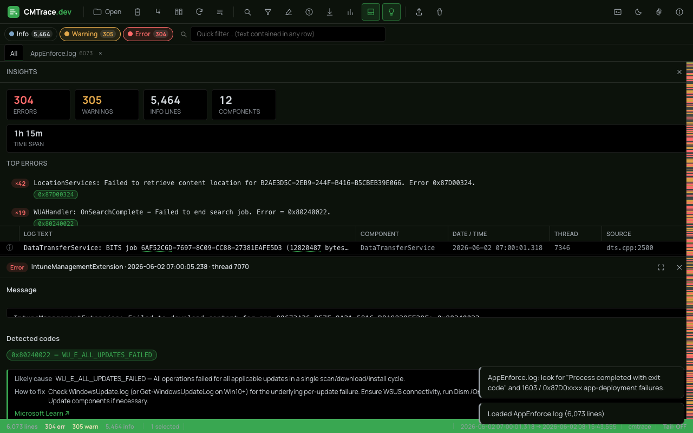

Built for huge logs
A virtualized grid stays smooth at 1M+ lines. Open giant client logs without freezing the browser.
A free, zero-install log viewer for ConfigMgr, SCCM and Intune. Open massive client logs, color-code severity and chase down error codes — all 100% on your machine.
Drop your log file here
or
.log .lo_ .txt .gz .zip — opens instantly, 100% in your browser
Runs entirely in your browser — nothing is uploaded.

A modern reimplementation of the classic CMTrace workflow, built for the logs you actually deal with.
A virtualized grid stays smooth at 1M+ lines. Open giant client logs without freezing the browser.
Reads the CMTrace format, legacy SCCM/ConfigMgr logs and plain text — it just figures it out.
Errors, warnings and info are instantly color-coded so failures jump off the screen.
Search across the whole log, filter by severity or text, and highlight matches as you scroll.
Decode Win32, HRESULT and SCCM error codes in place, with one-click links to Microsoft Learn.
Diff two logs side by side — a good run against a failing one — to spot exactly what changed.
A severity minimap and smart timeline surface error clusters and the moments that matter.
Jump straight to the right logs with built-in ConfigMgr and Intune Management Extension (IME) presets. Open .gz and .zip too.
Follow logs in real time, then install CMTrace.dev as a PWA that works fully offline — with dark mode.
Drop in two logs and CMTrace.dev lines them up like a git diff, so the one change that broke a deployment is impossible to miss.
If your day involves execmgr.log, AppEnforce.log or the IME log, this is for you.
Triage failed app deployments, task sequences and client health straight from the client log files.
Read the Intune Management Extension (IME) logs and Win32 app diagnostics without leaving the browser.
Share a link, not an install. Demo, document and troubleshoot on any machine, on any OS, in seconds.
Yes. CMTrace.dev is completely free and open. There are no accounts, no paywalls and no usage limits — just open it and start reading logs.
No. CMTrace.dev runs 100% in your browser. Your log files are parsed and rendered locally on your device and are never sent to a server, so it's safe for sensitive ConfigMgr and Intune logs.
It reads the CMTrace log format, legacy SCCM/ConfigMgr logs and plain-text logs. You can also open compressed .gz and .zip archives, and use built-in ConfigMgr and Intune (IME) presets.
The grid is virtualized and stays smooth at one million-plus lines. Only the visible rows are rendered, so large client logs scroll without freezing the browser.
Yes. CMTrace.dev is an installable Progressive Web App (PWA). Install it from your browser and it works offline, just like a desktop app — no network connection required to read logs.
No. CMTrace.dev is an independent open project and is not affiliated with or endorsed by Microsoft. CMTrace is a Microsoft tool and trademark; this is a browser-based reimplementation of that workflow.
No install, no upload, no waiting. Drop in a log and start tracing.